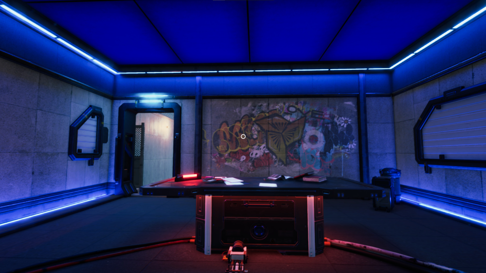
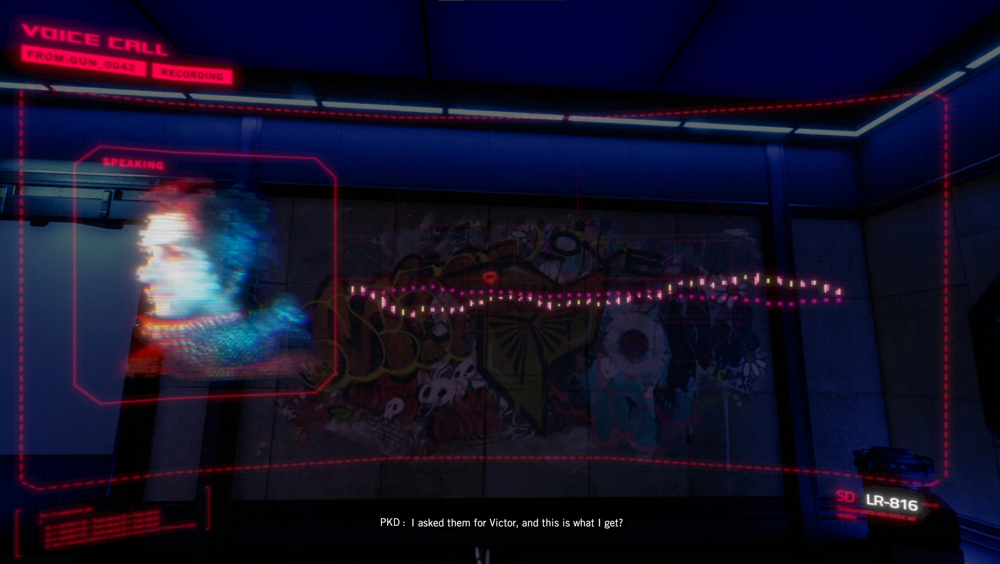
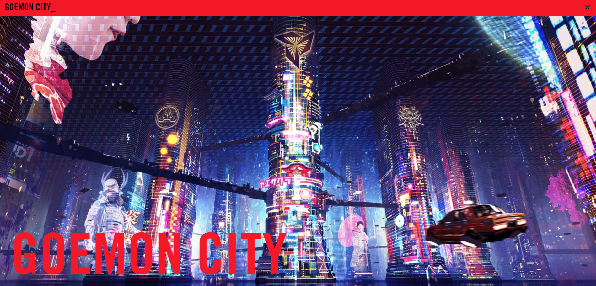
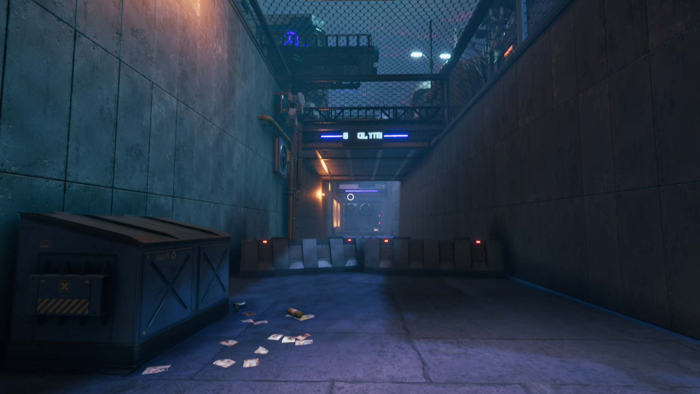
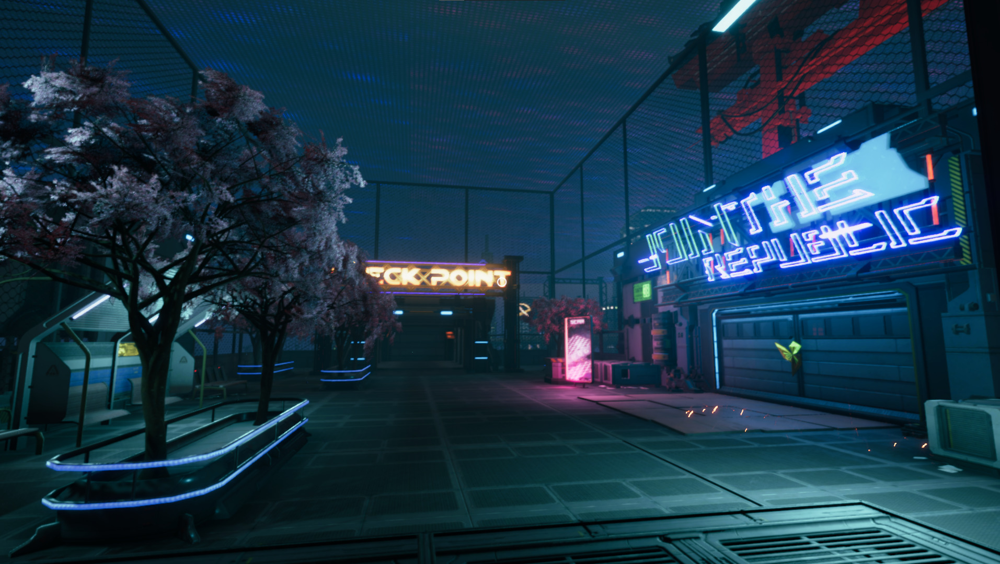
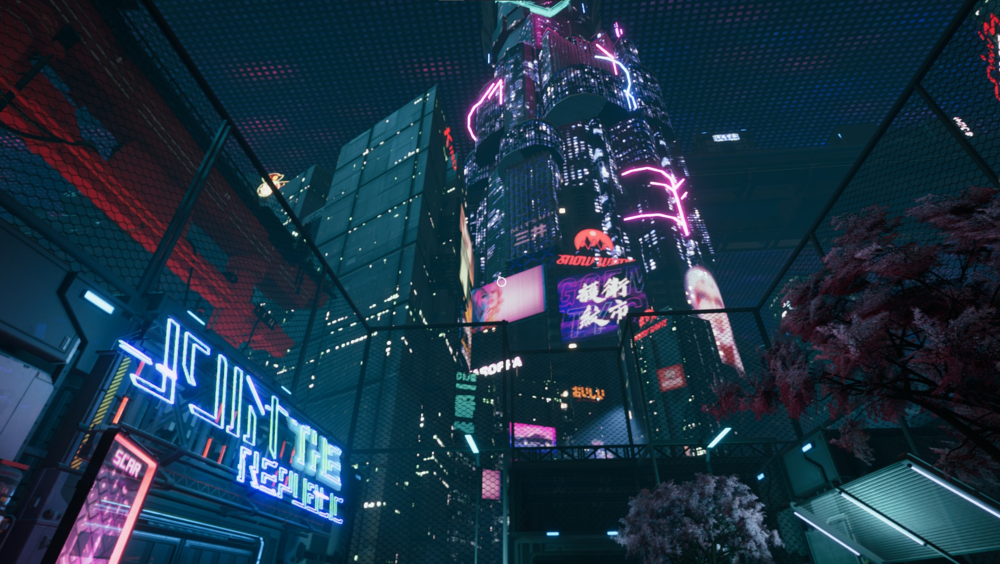
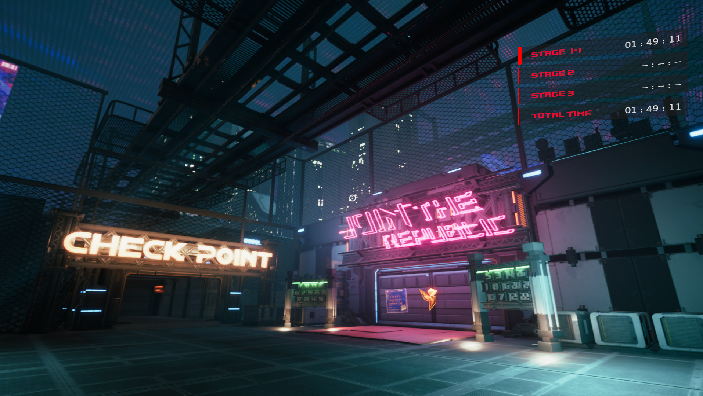
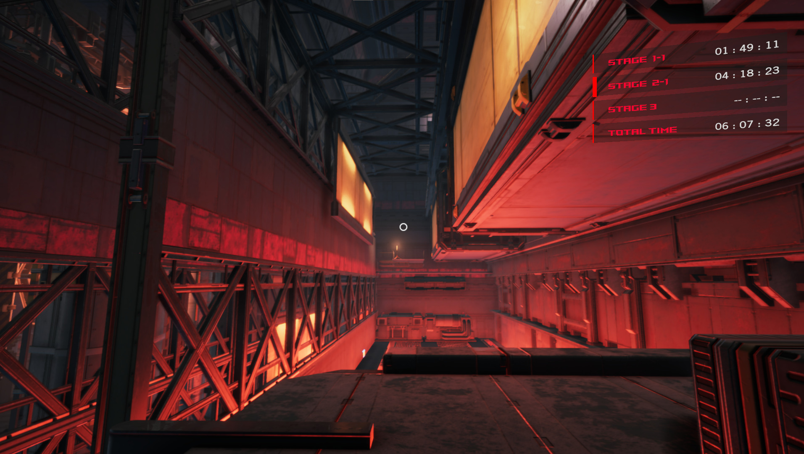
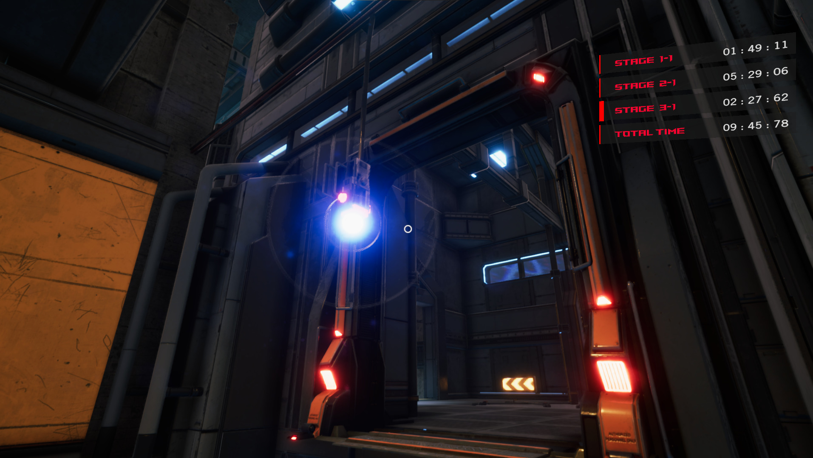
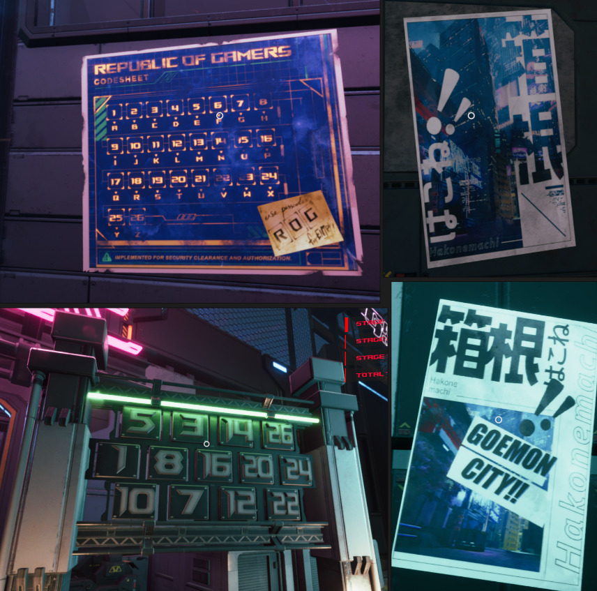

ROG CITADEL XV: SCAR RUNNER (2022)
- high-speed DLC with puzzle-driven routes -
Overview
ROG CITADEL XV: SCAR RUNNER is a high-speed expansion for the ROG Citadel XV experience. Unlike the main showroom, SCAR RUNNER focuses on rapid traversal, parkour-inspired movement, and puzzle-driven route optimization, challenging players to master the environment.
My Role
Returning as Game Director and Art Director, I focused on creating a distinct 'speedrunning' feel that get inspiration from popular parkour game genre. I art direct and set the tone for the overall look of the game experience, this including the base color scheme, the environment, lighting/atmosphere, and visual ques that guide players through high-speed routes without losing visual clarity, while introducing new mechanics that expanded the base game's reach.
Highlights
- Art directed a team of artist to create the Scarrunner aesthetics, looks and atmosphere throughout.
- Developed visual ques for players to follow such as wallrun way, grappling anchor, lighting hints etc.
- Unified the DLC's hyper-modern sci-fi aesthetic with the established ROG brand identity.
- Oversaw the balance between tight platforming and visual spectacle.
- Supervised all level designs and art designs of each stage.
Art & Process

The visual strategy for SCAR RUNNER revolved around bold, high-contrast silhouettes. We wanted the player to always feel the tension of speed while maintain a clear direction awareness by using visual ques. With the movement features such as double jumps and grappling hooks we allow the user to enjoy the thrill of motion and excitment of the speedrunning feel through out their experiences.
Tutorial Design
Again, a simple popup contextual tutorial that gives player an indication of how to user certain features. It looks great with motion that also helps player to quickly understand abstract ideas.

Mission Briefing Room


Concept
Because the concept of Goemon City was already established within ROG’s universe, it came with a well-defined aesthetic inspired by futuristic, cyberpunk Japanese metropolises. The challenge was translating this vision into a real-time parkour game environment while maintaining performance. Optimizing such a large-scale city was critical to achieving an acceptable frame rate without sacrificing visual fidelity. Drawing on prior experience, we successfully implemented asset streaming on demand, striking a strong balance between art quality and technical performance. (Below is the official concept art provided by ASUS ROG for Goemon City.)

General Aethetics
Here are the general design that we finalized in the game, that we believe stayed true to the source materials but also give it a bit of our flavour.






Puzzle Art
Some unique art assets created for the puzzle mini game that provides clue to the player.

Path Trail: Created by Mina
An awesome path trail features that helps to indicate the player of their intended direction.

Goemon City Overview: Modeling By Bao
A stunning Goemon City overview shot that's modeled by our in-house artist Bao in Unity. It is my favourite shot in the game that gives the player a grand rewarding feeling after complete all the secret courses.

Closing
Another run to led a team of artists to finish this amazing experience for ROG. It was really stressful in the pre-production stage to before confirming the final look/atmosphere that can anchor the entire project, as the scope of the city and numbers of assets that needs to be created for all the artists to use was relatively large. The stage design also took many of our artists by surprise as a proper art pipeline needed to quickly support in-engine editor to gives the stages a unified look and feel. In the end, it was all worth it and I am extremely grateful for all of our artists that contributed their best efforts.
Gallery
{kind=link}
{kind=link}
{kind=link}
{kind=link}
{kind=link}
{kind=link}
{kind=link}
{kind=link}
Project Details
Role: Game Director, Art Director
Type: Game DLC / High-Speed Platformer
Year: 2022
Client: ASUS ROG
Tools & Tech: Unity Engine, Photoshop, Maya, Substance Painter